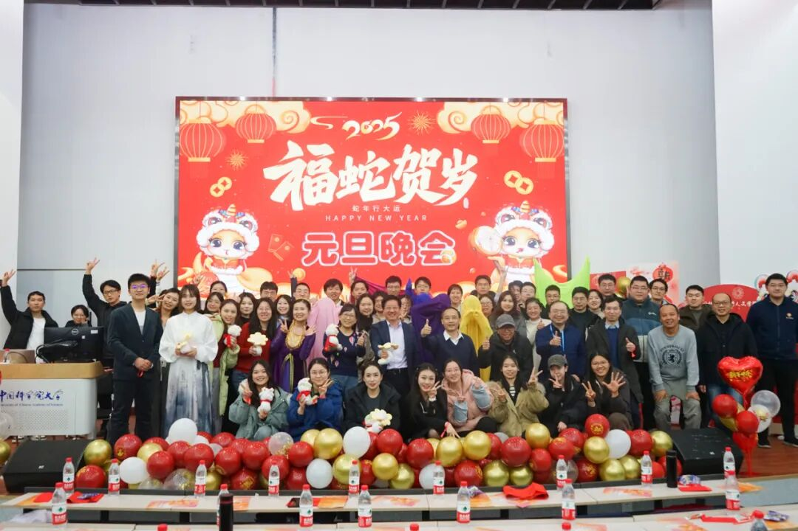

NEW YEAR CELEBRATION
新年师生联欢会
2025、2026两届新年师生联欢会
两届联欢会中，我承担了不同阶段的工作：2025年新年联欢会参与宣传与现场总控；2026年新年联欢会统筹宣传，完成海报、节目单与暖场视频等内容。
01我的工作
2025届：宣传与现场总控
晚会于2024年12月27日举行。前期收集节目音视频和背景资料，撰写活动预告；现场配合导演及演员，根据流程完成媒体播放和节目衔接。
2026届：宣传物料设计
晚会于2026年1月9日举行。围绕“文暖岁华，共赴新元”主题，设计海报与节目单，完成活动预告撰写与排版。
2026届：暖场视频
负责暖场视频剪辑，将活动氛围与节目安排结合，配合联欢会的前期宣传和现场使用。
02项目成果
2届
不同职责的联欢会
图文
海报、节目单与预告
影像
2026届暖场视频
两届工作分别归属，不将2025届的总控职责直接套用到2026届。活动合照为团队记录。
03作品与记录
点击图片放大查看；长图可在放大后继续向下滚动。

042025年 · 合照与活动推文

052026年 · 暖场视频与活动推文
2026年新年师生联欢会暖场视频 · 剪辑：冯子慧
2026年活动预告微信公众号 ↗2026年活动报道微信公众号 ↗06经验总结
晚会项目让我注意到设计与现场流程的关系。节目名称、顺序和音视频版本需要及时同步，视觉内容才能在真实使用场景中发挥作用。